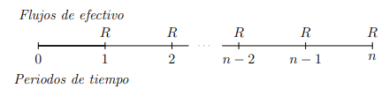
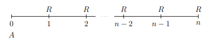
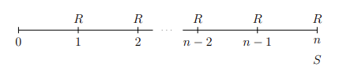
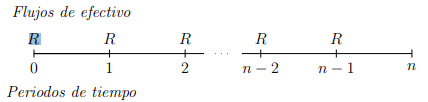
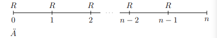
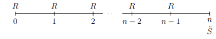

annuity(i, n, m = 0, k = 1, type = "inmediate")Tópicos Actuariales con R
Anualidades y Seguros
lifecontingencies
Anualidades
Actuary
R
Seguros
Si te dedicas a trabajar en el ambito de Ciencias Actuariales o Matemáticas Financiera, en este post, te comparto una de las librerias que fue publicada recientemente por Giorgio Alfredo Spedicato, la cual te ayudará mucho si quieres introducir tus computos o estimaciones al ecosistema de R y RStudio. Su autor se otorgo el nombre de lifecontingencies. A continuación conozcamos un poco de ella.
Librería lifecontingencies
En la actualidad el conocimiento sobre el uso de R, es muy demandado en los profesionales que requieren las empresas, siendo este un software libre especializado en estadística, con gran capacidad gracias al uso de complementos adicionalesm llamadas librerías, que al ser instaladas potencian las capacidades para desarrollar procedimientos especializados y que hacen de R Project un potente programa para el uso de diferentes ramas de la ciencia actuarial.
Como ya he mencionado es esencial la descarga de librerías que incrementan las funciones de R, en el caso de Cálculo Actuarial, la librería utilizada se llama lifecontingencies(Spedicato 2013).
Gracias a lo investigado por Giorgio Spedicato creador de la librería lifecontingencies y presentado en el paper “The lifecontingencies Package: Performing financial and Actuarial Mathematics Calculations in R” (Spedicato, 2013, p.1-2), encontramos lo siguiente.
El entorno de programación estadística en R se ha convertido en el principal software de referencia para académicos, incluso en los negocios, R ahora se considera una alternativa válida a los paquetes estadísticos comerciales más importantes como por ejemplo:
SAS (SAS Institute Inc., 2011)
MATLA (The MathWorks, Inc., 2011)
SPSS (IBM Corp, 2012)
Algunos paquetes para aplicaciones actuariales se han desarrollado dentro de R. Sin embargo, la mayoría de ellos se centran principalmente en seguros de no vida, los principales son:
actuar(Dutang, Goulet, y Pigeon, 2008): este paquete representa el lado computacional de la metodología actuarial clásica sobre la distribución de pérdidas.ChainLadder(Gesmann y Zhang, 2011): proporciona funciones que son capaces de estimar reservas de pérdidas para el seguro de no vida y de modelos lineales generalizados (GLM), ampliamente utilizados en las decisiones para la tasa del seguro, por funciones agrupadas dentro de la base de distribuciones deR.
El trabajo actuarial sobre seguros de vida se ocupa principalmente de datos demográficos y financieros.
El CRAN enumera varios paquetes especializados para el análisis financiero entre los que encontramos YielCurve (Guirreri, 2010) y termstrc (Ferstl y Hayden, 2010) los cuales son capaces de realizar modelos financieros con tasas de interés. Entre los pocos paquetes que manejan datos demográficos, estan demografy (Hyndman, Booth, Ticke y Maindonald, 2011) y LifeTables (Riffe, 2011) pueden utilizarse para gestionar las proyecciones demográficas.
Por otra parte, muchos paquetes de software comerciales adaptados especificamente para el análisis de los seguros de vida ya están disponibles son: MoSes (Tower Watson,2011) y Prophet (SunGard, 2012) son actualmente los principales paquetes de software actuarial para el modelado de los seguros de vida.
El paquete lifecontingencies aparece como el primer paquete de R, para realizar cálculos de matemáticas contingentes de vida. Apunta a representar al compañero computacional para resoler conceptos teóricos expuestos en libros de texto como el clásico Bowser (Bowers, Jones, Gerber, Nesbitt, y Hickman, 1997), para la evaluación de matemáticas actuariales y Broverman (Broverman, 2008) para las matemáticas financieras.
El uso de la librería lifecontingencies en este post, se utilizara para temas planteados con contingencias relacionadas a una sola persona, sin embargo, el lector ya con una idea más clara y con conocimientos sobre esta librería, podrá abordar las funciones para resolver problemas de contingencias para el caso de N personas los cuales posiblemente la oborde en otro post sobre Calculo Actuarial Avanzado.
Nota: En todo problema que realizaremos es muy importante que realices tus propios calculos para que compruebes cómo se llegó al resultado.
Anualidades
Las anualidades representan el grupo más importante de aplicaciones de las matemáticas financieras, ya que la gran mayoría de las operaciones de crédito, tanto comerciales como puramente financieras, se pactan estableciendo una serie de pagos periódicos que habrán de realizarse durante su vigencia.
Una anualidad es una serie de pagos iguales realizados en intervalos de tiempo regualares durante un tiempo determinado. El término de anualidad no se refiere específicamente a periodos anuales. En matemáticas financieras el término anualidad tiene un significado mucho más general. Los pagos podrían ser semanales, quincenales, mensuales, trimestrales, semestrales, etcétera.
Trataremos de simular algunos tipos de anualidades en R.
Anualidades Vencidas
Una anualidad vencida es una serie de pagos iguales realizados al final de cada periodo de pago, un ejemplo de ellas es cuando hacemos el pago mensual de alguna tarjeta de crédito o el pago mensual de una cuenta de ahorro.
A continuación se muestra el diagrama de tiempo de dichas anualidades.

El número cero representa el momento actual o el tiempo presente. El número uno representa el final del primer periodo y coincide con el inicio del segundo periodo. La letra \(R\) representa la anualidad y los intereses que pagan son intereses compuestos por lo tanto son capitalizable.
Valor presente de una anualidad vencida
Se supone una anualidad vencida donde \(R\) es el pago de la anualidad al final de cada periodo de pago en un plazo de \(n\) periodos

La fecha focal se localiza en el momento actual, y la letra \(A\) representa el valor actual de la anualidad. La expresión es la siguiente
\[ A = R(1+i)^{-1} + R(1+i)^{-2} + . . . + R(1+i)^{-(n-2)} + R(1+i)^{-(n-1)} + R(1+i)^{-n}\hspace{1cm} (1) \]
haciendo \((1+i)^{-1} = v\) entonces podemos escribir (1) de la siguiente manera
\[ \begin{eqnarray} A &=& Rv + Rv^2 + . . . + Rv^{n-2} + Rv^{n-1} + Rv^n\\[0.2cm] &=& R(v + v^2 + . . . + v^{n-2} + v^{n-1} + Rv^n)\hspace{1cm} (2) \end{eqnarray} \]
Claramente (2) representa una suma de progresión geométrica decreciente.
\[ A = R\frac{v(1-v^n)}{1-v} \]
donde el denominador es iguala a:
\[ \begin{eqnarray} 1 - v = 1 - \frac{1}{1+i} &=& \frac{1+i-1}{1+i} = i\frac{1}{1+i} = iv\\[0.2cm] A &=& R\frac{v(1-v^n)}{iv}\\[0.2cm] A &=& R\frac{1 - (1+i)^{-n}}{i} \end{eqnarray} \]
Valor futuro de una anualidad vencida
El valor futuro de una anualidad es cuando la fecha se localiza al final de último periodo y es la suma de los pagos periódicos junto con su interés compuesto acumulado.
Se supone una anualidad vencidad donde \(A\) es el pago de la anualidad al final de cada periodo de pago en un plazo de \(n\) periodos. La letra \(i\) representa la tasa de interés compuesta por periodo.

La fecha focal coincide con el final del último periodo. La expresión es la siguiente:
\[ S = R(1+i)^{n-1} + R(1 + i)^{n-2} + . . . + R(1+i)^{2} + R(1+i)^{1} + R \]
haciendo \((1+i) = r\), podemos escribir la ecuación anterior de la siguiente manera:
\[ S = R(r^{n-1} + r^{n-2} + . . . + r^2 + r + 1) \]
entonces
\[ \begin{eqnarray} S = R\frac{r^n - 1}{r - 1} &=& R\frac{(1+i)^n - 1}{1 + i -1}\\[0.2cm] S &=& R\frac{(1+i)^n-1}{i} \end{eqnarray} \]
Anualidades anticipadas
En las anualidades anticipadas se hacen los pagos al inicio de cada periodo. Una anualidad anticipada es una serie de pagos iguales realizados al inicio del periodo de pago.

El tiempo cero representa el tiempo presente y coincide con el primer pago de la anualidad. El número uno representa el final del primer periodo y coincide con el deposito del segundo periodo y así sucesivamente.
Valor Presente de una anualidad anticipada
Es la cantidad de dinero en el tiempo presente que tenemos que invertir para hacer cierto número de retiros esperados en el futuro.
Para desarrollar la fórmula del valor presente de una anualidad anticipada se expone el siguiente diagrama:

Si la fecha focal se localiza al inicio del primer periodo de pago, entonces:
\[ \ddot{A} = R\frac{1 - (1+i)^{-(n-1)}}{i} + R \]
Valor futuro de una anualidad anticipada
Para deducir la fórmula del valor futuro de una anualidad anticipada, se expone el siguiente diagrama de tiempo

El monto final del valor futuro de la anualidad anticipada se expresa de la siguiente manera:
\[ \ddot{S} = R\frac{(1+i)^n - 1}{i}\cdot (1+i) \]
Función annuity
En R la función annuity calcula el valor presente de una anualidad.
donde los parámetros:
iinterés efectivos expresado en forma decimal.nPeríodos de pago. Si \(n\) es infinito entonces la anualidad devuelve el valor de una perpetuidad.mPeriodo de diferimiento, cuyo valor predeterminado es cero.kFrecuencia anual de pagostypeUna cadena, ya sea, “immediate” o “due”. Si los pagos se realizan al final de cada período de \(n\) períodos, tene,mos una “annuity-immediate”. De lo contrario , si los pagos se realizan al comienzo de cada período, tenemos una “annuity-due”.
Función accumulatedValue
En R la función accumulatedValue calcule el valor futuro de una anualidad.
accumulatedValue(i, n, m = 0, k, type = "immediate")donde,
iInterées efectivo expresado en forma decimal.nPeríodos de pago. Si \(n\) es infinito entonces la anualidad devuelve el valor de una perpetuidad.mPeriodo de diferimiento, cuyo valor predeterminado es cero.kFrecuencia anual de pagostypeUna cadena, ya sea, “inmediate” o “due”. Si los pagos se realizan al final de cada período de \(n\) períodos tenemos una “annuity-immediate”. De lo contrario, si los pagos se realizan al comienzo de cada periodo, tenemos una “annuity-due”.
Ejemplos
Calcular el valor presente de cuatro pagos anuales de \(\$500.00\), el primero de ellos se efectua un año después de este momento y la tasa es del \(8\%\) anual efectiva.
\[ \mbox{Solución} \]
Método manual:
\[ \begin{eqnarray} A &=& R\frac{1 - (1+i)^{-n}}{i}\\[0.2cm] &=& 500\frac{1 - (1+0.08)^{-4}}{0.08}\\[0.2cm] &=& \fbox{1656.063} \end{eqnarray} \]
Usando R
library(lifecontingencies)
A <- 500*annuity(i = 0.08, n = 4, type = "immediate")
A[1] 1656.063Calcular el valor presente de una anualidad de una cantidad de \(\$100\) pagaderos al año durante 5 años a una tasa de interés del 9%.
\[ \mbox{Solución} \]
\[ \begin{eqnarray} A &=& R\frac{1 - (1+i)^{-n}}{i}\\[0.2cm] &=& 100\frac{1 - (1+0.09)^{-5}}{0.09}\\[0.2cm] &=& \fbox{388.9651} \end{eqnarray} \]
ahora, resolvamos con R
A <- 100*annuity(i = 0.09, n = 5, type = "immediate")
A[1] 388.9651¿Qué cantidad debe invertir hoy en la tasa de interés del 15% anual compuesto de manera que e desea retirar 8000 al comienzo de cada año, durante los proximos 5 años?
\[ \mbox{Solución} \]
\[ A = 8000\frac{1 - (1+0.15)^{-4}}{0.15} + 8000 = \fbox{30839.83} \]
ahora usando R obtenemos:
8000*annuity(i = 0.15, n = 5, type = "due")[1] 30839.83¿Qué cantidad se acumulara si depositamos $1200 al comienzo de cada año durante los próximos 10 años? Asumir un interés del 5% anual?
\[ \mbox{solución} \]
\[ \ddot{S} = 1200\frac{(1+0.05)^{10} - 1}{0.05}\cdot(1+0.05) = \fbox{15848.14} \]
En R esto sería
1200*accumulatedValue(i = 0.05, n = 10, type = "due")[1] 15848.14Un hombre quiere ahorrar $180,000 para pagar por la educación de su hijo dentro de 12 años. Un fondo de eduación obliga a los inversionistas a depositar cuotas iguales al final de cada año. Si el tipo de interés garantizado es del 5%, ¿Cuánto necesita ahorrar cada año con el fin de cumplir su objetivo?
\[ \mbox{Solución} \]
\[ \begin{eqnarray} S &=& R\frac{(1+i)^n -1}{i}\\[0.2cm] R &=& \frac{S}{\frac{(1+i)^n - 1}{i}} \\[0.2cm] &=& \frac{180000}{\frac{(1+0.05)^{12} -1}{0.05}}\\[0.2cm] &=& \fbox{11308.57} \end{eqnarray} \]
En R
180000/accumulatedValue(i = 0.05, n = 12, type = "immediate")[1] 11308.57Una persona solicita un crédito para rehabilitar las recamaras y baños de su casa. El banco se lo autoriza y otorga cuatro meses de plazo para empezar a pagar su credito en forma vencida, es decir, que deberá hacer su primer pago al final del quinto mes. El credito se deberá amortizar pagando 24 mensualidades de $4,240. ¿Cuál será el valor del crédito?
\[ \mbox{Solución} \]
4240*annuity(i = 0.015, n = 24, m = 4, type = "immediate")[1] 80018.69